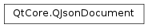

QJsonDocument¶
Synopsis¶
Functions¶
- def
__eq__(other) - def
__ne__(other) - def
array() - def
isArray() - def
isEmpty() - def
isNull() - def
isObject() - def
object() - def
operator[](i) - def
operator[](key) - def
rawData(size) - def
setArray(array) - def
setObject(object) - def
swap(other) - def
toBinaryData() - def
toJson() - def
toJson(format) - def
toVariant()
Static functions¶
- def
fromBinaryData(data[, validation=Validate]) - def
fromJson(json[, error=nullptr]) - def
fromRawData(data, size[, validation=Validate]) - def
fromVariant(variant)
Detailed Description¶
The
PySide2.QtCore.QJsonDocumentclass provides a way to read and write JSON documents.
PySide2.QtCore.QJsonDocumentis a class that wraps a complete JSON document and can read and write this document both from a UTF-8 encoded text based representation as well as Qt’s own binary format.A JSON document can be converted from its text-based representation to a
PySide2.QtCore.QJsonDocumentusingQJsonDocument.fromJson().PySide2.QtCore.QJsonDocument.toJson()converts it back to text. The parser is very fast and efficient and converts the JSON to the binary representation used by Qt.Validity of the parsed document can be queried with !
PySide2.QtCore.QJsonDocument.isNull()A document can be queried as to whether it contains an array or an object using
PySide2.QtCore.QJsonDocument.isArray()andPySide2.QtCore.QJsonDocument.isObject(). The array or object contained in the document can be retrieved usingPySide2.QtCore.QJsonDocument.array()orPySide2.QtCore.QJsonDocument.object()and then read or manipulated.A document can also be created from a stored binary representation using
PySide2.QtCore.QJsonDocument.fromBinaryData()orPySide2.QtCore.QJsonDocument.fromRawData().See also
JSON Support in Qt JSON Save Game Example
-
class
PySide2.QtCore.QJsonDocument¶ -
class
PySide2.QtCore.QJsonDocument(array) -
class
PySide2.QtCore.QJsonDocument(other) -
class
PySide2.QtCore.QJsonDocument(object) Parameters: - array –
PySide2.QtCore.QJsonArray - object –
PySide2.QtCore.QJsonObject - other –
PySide2.QtCore.QJsonDocument
Constructs an empty and invalid document.
Constructs a
PySide2.QtCore.QJsonDocumentfromarray.Creates a copy of the
otherdocument.Creates a
PySide2.QtCore.QJsonDocumentfromobject.- array –
-
PySide2.QtCore.QJsonDocument.DataValidation¶ This value is used to tell
PySide2.QtCore.QJsonDocumentwhether to validate the binary data when converting to aPySide2.QtCore.QJsonDocumentusingPySide2.QtCore.QJsonDocument.fromBinaryData()orPySide2.QtCore.QJsonDocument.fromRawData().Constant Description QJsonDocument.Validate Validate the data before using it. This is the default. QJsonDocument.BypassValidation Bypasses data validation. Only use if you received the data from a trusted place and know it’s valid, as using of invalid data can crash the application.
-
PySide2.QtCore.QJsonDocument.JsonFormat¶ This value defines the format of the JSON byte array produced when converting to a
PySide2.QtCore.QJsonDocumentusingPySide2.QtCore.QJsonDocument.toJson().Constant Description QJsonDocument.Indented Defines human readable output as follows:
{ "Array": [ true, 999, "string" ], "Key": "Value", "null": null }
QJsonDocument.Compact Defines a compact output as follows:
{"Array":[true,999,"string"],"Key":"Value","null":null}
-
PySide2.QtCore.QJsonDocument.array()¶ Return type: PySide2.QtCore.QJsonArrayReturns the
PySide2.QtCore.QJsonArraycontained in the document.Returns an empty array if the document contains an object.
-
static
PySide2.QtCore.QJsonDocument.fromBinaryData(data[, validation=Validate])¶ Parameters: - data –
PySide2.QtCore.QByteArray - validation –
PySide2.QtCore.QJsonDocument.DataValidation
Return type: Creates a
PySide2.QtCore.QJsonDocumentfromdata.validationdecides whether the data is checked for validity before being used. By default the data is validated. If thedatais not valid, the method returns a null document.See also
PySide2.QtCore.QJsonDocument.toBinaryData()PySide2.QtCore.QJsonDocument.fromRawData()PySide2.QtCore.QJsonDocument.isNull()QJsonDocument.DataValidation- data –
-
static
PySide2.QtCore.QJsonDocument.fromJson(json[, error=nullptr])¶ Parameters: - json –
PySide2.QtCore.QByteArray - error –
PySide2.QtCore.QJsonParseError
Return type: Parses
jsonas a UTF-8 encoded JSON document, and creates aPySide2.QtCore.QJsonDocumentfrom it.Returns a valid (non-null)
PySide2.QtCore.QJsonDocumentif the parsing succeeds. If it fails, the returned document will be null, and the optionalerrorvariable will contain further details about the error.- json –
-
static
PySide2.QtCore.QJsonDocument.fromRawData(data, size[, validation=Validate])¶ Parameters: - data – str
- size –
PySide2.QtCore.int - validation –
PySide2.QtCore.QJsonDocument.DataValidation
Return type: Creates a
PySide2.QtCore.QJsonDocumentthat uses the firstsizebytes fromdata. It assumesdatacontains a binary encoded JSON document. The created document does not take ownership ofdataand the caller has to guarantee thatdatawill not be deleted or modified as long as anyPySide2.QtCore.QJsonDocument,PySide2.QtCore.QJsonObjectorPySide2.QtCore.QJsonArraystill references the data.datahas to be aligned to a 4 byte boundary.validationdecides whether the data is checked for validity before being used. By default the data is validated. If thedatais not valid, the method returns a null document.Returns a
PySide2.QtCore.QJsonDocumentrepresenting the data.See also
PySide2.QtCore.QJsonDocument.rawData()PySide2.QtCore.QJsonDocument.fromBinaryData()PySide2.QtCore.QJsonDocument.isNull()QJsonDocument.DataValidation
-
static
PySide2.QtCore.QJsonDocument.fromVariant(variant)¶ Parameters: variant – object Return type: PySide2.QtCore.QJsonDocumentCreates a
PySide2.QtCore.QJsonDocumentfrom thePySide2.QtCore.QVariantvariant.If the
variantcontains any other type than aPySide2.QtCore.QVariantMap,QVariantHash,QVariantListorPySide2.QtCore.QStringList, the returned document is invalid.
-
PySide2.QtCore.QJsonDocument.isArray()¶ Return type: PySide2.QtCore.boolReturns
trueif the document contains an array.
-
PySide2.QtCore.QJsonDocument.isEmpty()¶ Return type: PySide2.QtCore.boolReturns
trueif the document doesn’t contain any data.
-
PySide2.QtCore.QJsonDocument.isNull()¶ Return type: PySide2.QtCore.boolreturns
trueif this document is null.Null documents are documents created through the default constructor.
Documents created from UTF-8 encoded text or the binary format are validated during parsing. If validation fails, the returned document will also be null.
-
PySide2.QtCore.QJsonDocument.isObject()¶ Return type: PySide2.QtCore.boolReturns
trueif the document contains an object.
-
PySide2.QtCore.QJsonDocument.object()¶ Return type: PySide2.QtCore.QJsonObjectReturns the
PySide2.QtCore.QJsonObjectcontained in the document.Returns an empty object if the document contains an array.
-
PySide2.QtCore.QJsonDocument.__ne__(other)¶ Parameters: other – PySide2.QtCore.QJsonDocumentReturn type: PySide2.QtCore.boolreturns
trueifotheris not equal to this document
-
PySide2.QtCore.QJsonDocument.__eq__(other)¶ Parameters: other – PySide2.QtCore.QJsonDocumentReturn type: PySide2.QtCore.boolReturns
trueif theotherdocument is equal to this document.
-
PySide2.QtCore.QJsonDocument.operator[](key) Parameters: key – unicode Return type: PySide2.QtCore.QJsonValueReturns a
PySide2.QtCore.QJsonValuerepresenting the value for the keykey.Equivalent to calling
PySide2.QtCore.QJsonDocument.object().value(key).The returned
PySide2.QtCore.QJsonValueisQJsonValue.Undefinedif the key does not exist, or ifPySide2.QtCore.QJsonDocument.isObject()is false.See also
PySide2.QtCore.QJsonValueQJsonValue.isUndefined()PySide2.QtCore.QJsonObject
-
PySide2.QtCore.QJsonDocument.operator[](i) Parameters: i – PySide2.QtCore.intReturn type: PySide2.QtCore.QJsonValueReturns a
PySide2.QtCore.QJsonValuerepresenting the value for indexi.Equivalent to calling
PySide2.QtCore.QJsonDocument.array().at(i).The returned
PySide2.QtCore.QJsonValueisQJsonValue.Undefined, ifiis out of bounds, or ifPySide2.QtCore.QJsonDocument.isArray()is false.
-
PySide2.QtCore.QJsonDocument.rawData(size)¶ Parameters: size – PySide2.QtCore.intReturn type: str Returns the raw binary representation of the data
sizewill contain the size of the returned data.This method is useful to e.g. stream the JSON document in it’s binary form to a file.
-
PySide2.QtCore.QJsonDocument.setArray(array)¶ Parameters: array – PySide2.QtCore.QJsonArraySets
arrayas the main object of this document.
-
PySide2.QtCore.QJsonDocument.setObject(object)¶ Parameters: object – PySide2.QtCore.QJsonObjectSets
objectas the main object of this document.
-
PySide2.QtCore.QJsonDocument.swap(other)¶ Parameters: other – PySide2.QtCore.QJsonDocumentSwaps the document
otherwith this. This operation is very fast and never fails.
-
PySide2.QtCore.QJsonDocument.toBinaryData()¶ Return type: PySide2.QtCore.QByteArrayReturns a binary representation of the document.
The binary representation is also the native format used internally in Qt, and is very efficient and fast to convert to and from.
The binary format can be stored on disk and interchanged with other applications or computers.
PySide2.QtCore.QJsonDocument.fromBinaryData()can be used to convert it back into a JSON document.
-
PySide2.QtCore.QJsonDocument.toJson(format)¶ Parameters: format – PySide2.QtCore.QJsonDocument.JsonFormatReturn type: PySide2.QtCore.QByteArrayConverts the
PySide2.QtCore.QJsonDocumentto a UTF-8 encoded JSON document in the providedformat.See also
PySide2.QtCore.QJsonDocument.fromJson()QJsonDocument.JsonFormat
-
PySide2.QtCore.QJsonDocument.toJson() Return type: PySide2.QtCore.QByteArrayConverts the
PySide2.QtCore.QJsonDocumentto a UTF-8 encoded JSON document.
-
PySide2.QtCore.QJsonDocument.toVariant()¶ Return type: object Returns a
PySide2.QtCore.QVariantrepresenting the Json document.The returned variant will be a
QVariantListif the document is aPySide2.QtCore.QJsonArrayand aPySide2.QtCore.QVariantMapif the document is aPySide2.QtCore.QJsonObject.
© 2018 The Qt Company Ltd. Documentation contributions included herein are the copyrights of their respective owners. The documentation provided herein is licensed under the terms of the GNU Free Documentation License version 1.3 as published by the Free Software Foundation. Qt and respective logos are trademarks of The Qt Company Ltd. in Finland and/or other countries worldwide. All other trademarks are property of their respective owners.